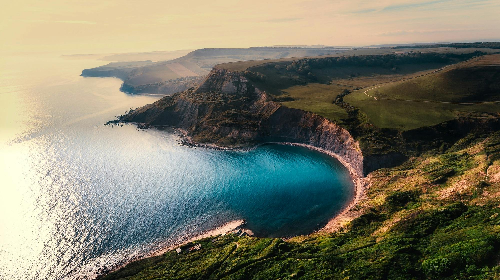
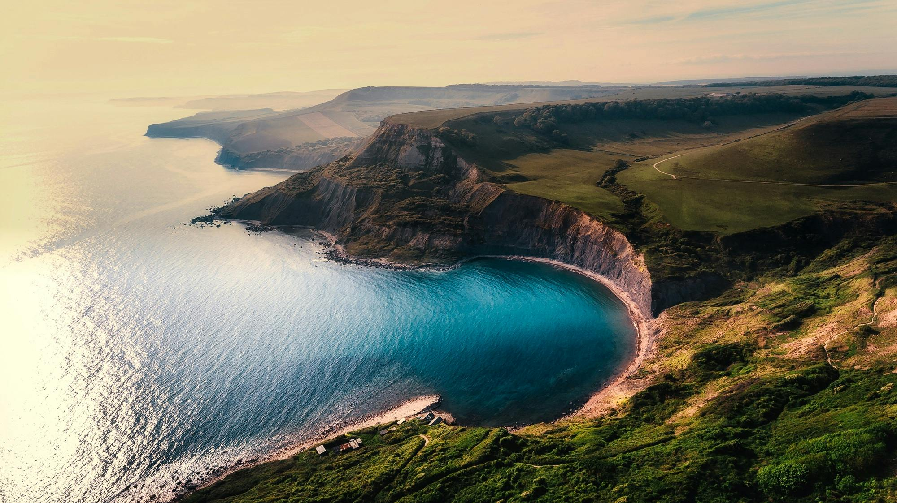

About
Oceans cover over 70% of our planet's surface and are vital to Earth's ecosystems. These vast bodies of water regulate our climate, generate much of the oxygen we breathe, and support extraordinary biodiversity from microscopic plankton to the largest animals on Earth.
The five main oceans—Pacific, Atlantic, Indian, Southern, and Arctic—each have unique characteristics and ecosystems. They serve as critical transportation routes, provide food for billions of people, and hold tremendous potential for scientific discovery and sustainable resources.
Images


 
